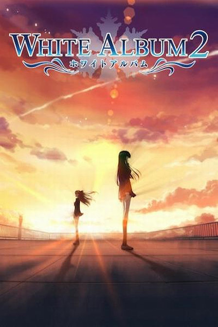

about
white album 2
White Album, a song for the season, a song for love.
18禁
FBI WARNINGGal Game
Synopsis
Haruki Kitahara's light music club is on the verge of disbanding. At this rate, the third year's dream of performing at the school festival would never be realized. However, as his exhausted fingers drift through the chords of "White Album", the first song he would ever play, an angelic voice and mysterious piano begin harmonizing with his lonely guitar. It is a momentous performance that marks the beginning of everything for Haruki.
Background
No background information has been added to this title. Help improve our database by adding background information here.
Video
No promotional video has been added to this title. Help improve our database by adding a promotional video here.
Dramaplot--------100%
Dubbing--------100%
Back Ground Music--------100%
the review of white album 2
白色相簿2观后感
All of this is from memory. I don’t think my memory is the best. So there’s bound to be some inaccuracies, perhaps more temporal than factual. I cut out the existence of numerous side characters within Concluding Chapter. They are affable, but not essential to the main storyline. There may be discrete entries written about each particular heroine, but try not to count on it.
Flip a page to see the next segment. There are embedded pictures, so I didn’t want to spoil out of each respective section. I suggest reading it chronologically.
If you’re a Setsuna fan, do not skip the Touma routes. If you’re a Touma fan, do not skip the Setsuna routes. I’ve written this so no information repeats. So, if you skip a section, you’ll skip too much.
A summary, regardless of how detailed, cannot replace actually reading through the story. I highly recommend actually reading the work. But for some, that’s not a practical choice. So for those who cannot be bothered, this entry exists. This isn’t an entirely objective summary. It includes much sentimentality, and preferences to specific characters. But I include, and try my best to define each character as they are. The feeling that you get when reading this should be akin to listening to an orator telling a story, than of reading historical text. It might not be for everyone. In the end, do note that no matter how holistic, or detailed a summary may be, it will invariably fail in properly conveying the sentiments of the work.
White Album 2 Lover and Friends
Kitahara Haruki.................................................................
hero
Ogiso Setsuna............................................................... heroine
Touma Kazusa.............................................................. heroine
HOW TO BE
A WHITE SCHOLAR
If possible, I will tell you my story.
“白色相簿什么的，已经无所谓了。 因为已经不再有歌，值得去唱了。 传达不了的恋情，已经不需要了。 因为已经不再有人，值得去爱了。”